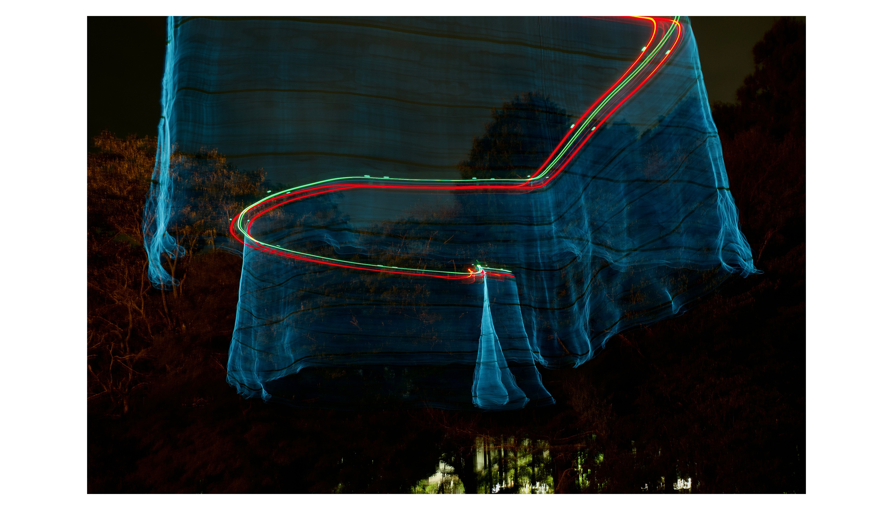
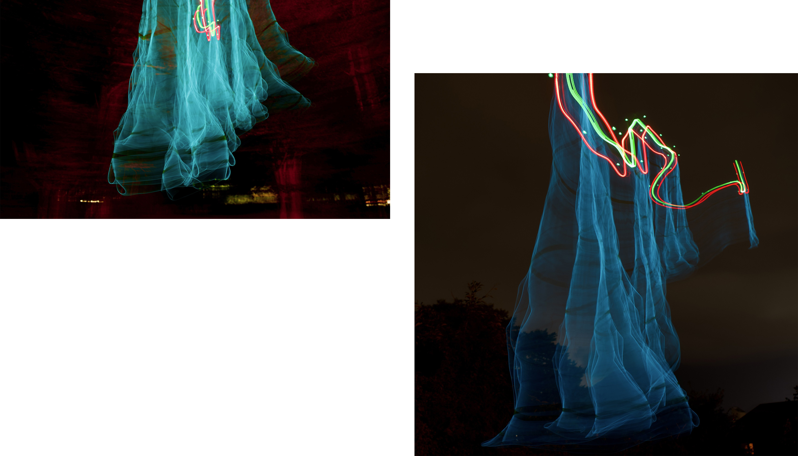
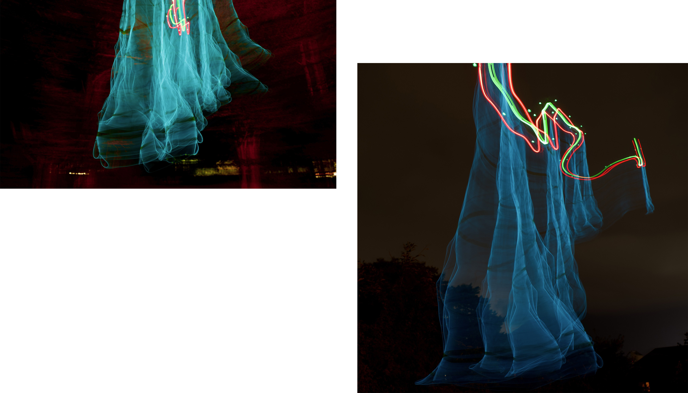
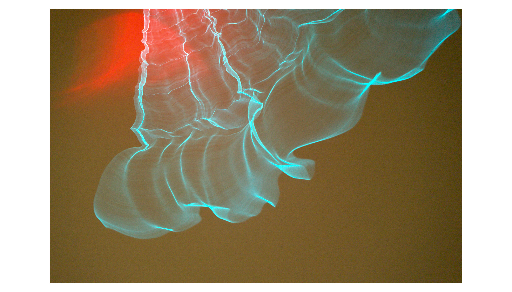

[ aurora ] installation
Medium installation
year June2025
software DJI Assistant 2 / photoshop / Illustrator
この作品は、夜空にテープライトを装着したドローンを飛ばし、長時間露光で撮影することで、夜空にオーロラのような光跡を出現させました。
北国のオーロラに憧れて、日常の街並みの中に非日常を生み出したいと思ったのが出発点です。
自然現象としてのオーロラに着想を得て、テクノロジーを組み合わせることで、日常の景色に非日常を創り出すことを試みています。
空全体をキャンバスに見立てて光のラインで風景を描き出しながら、都市空間へ自然のイメージを介入させる新しい表現を探りました。

 

